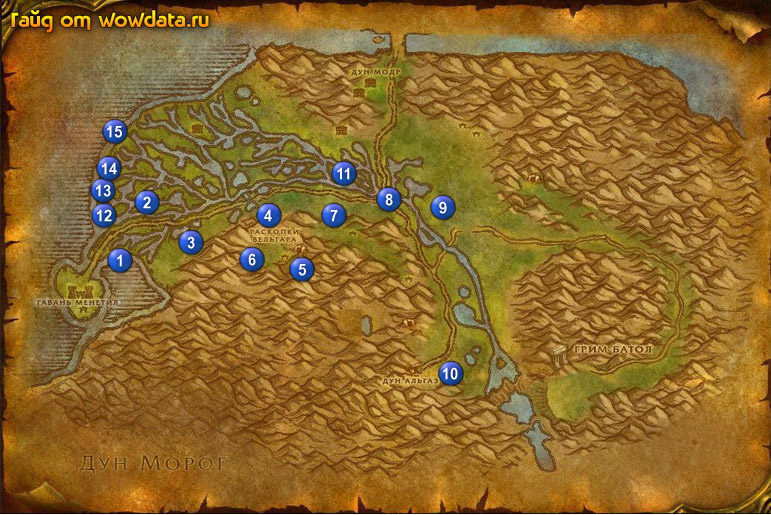

1) В доках начните <Угроза из глубин>.
2) В западной части города начните <Шкуры молодых кроколисков>.
3) Поднимитесь наверх замка и начните <Боевые знамена>.
4) В восточной части города начните <Прожорливый слизнюк>.
5) Около гостиницы начните <Третья флотилия> и <Страж Природы>.
6) Сделайте Гавань Менетил вашим домом.
7) На втором этаже в гостинице закончите <Рассеянный геолог> и начните <Рассеянный геолог>.
8) Купите [Кружка медовухи] у хозяина гостиницы для <Третья флотилия>, и отдайте ее парню у входа в гостиницу. Начните <Проклятая команда>.
9) На мосту из города начните <Пропавшие ученые>.
10) Бейте Молодой болотный кроколиск к востоку от дороги 1 (14, 52),а также на севере в долине озер для <Шкуры молодых кроколисков>.
11) Бейте Мурлок из племени Синежабрых и Жрун 2 (18, 40) для <Угроза из глубин>.
12) Бейте Крапчатый ящер и Крапчатый крикун 3 (примерно 25, 46) для <Рассеянный геолог> (только ради 1 детали).
13) Войдите в Раскопки 4 (34, 40).
14) Бегите по дороге наверх и в пещерке около 2 нпс на полу подберите [Окаменелость Бутылпуза] 5 (38, 52) для <Рассеянный геолог>.
15) Закончите тут же <Пропавшие ученые> и начните <Пропавшие ученые>.
16) Рядом начните <Тайны прошлого>.
17) Снаружи, у пещеры начните <Месть Ормера>.
18) Вернитесь туда где вы пару минут назад били рапторов 3 (25, 46) и бейте еще Крапчатый ящер иКрапчатый крикун для <Месть Ормера>.
19) Вернитесь обратно к пещере 5 (38, 52) и закончите <Месть Ормера>, начните
<Месть Ормера>.
20) Спуститесь вниз, бейте Крапчатый смертехват и Крапчатый острозуб для <Месть Ормера>, а также собирайте реликты для <Тайны прошлого> (модр = Тонкая Красная ваза, голм= Толстая Желтая ваза, неру = Кучка грязи, адос = Гробница).
21) Вернитесь обратно к пещере и закончите <Месть Ормера>, начните
<Месть Ормера>.
22) В самой пещере закончите <Тайны прошлого>.
23) Идите делать <Месть Ормера> 6 (32, 51), Зарлозуб 29 лвл, но все-таки убиваемый. Закончите квест опять таки у пещеры.
24) Идите на юг и делайте <Боевые знамена> 7 (43, 40).
25) Идите начните <Ежедневная доставка> 8 (49, 39).
26) Бегите на восток, закончите <Страж Природы> 9 (56, 40), начните <Вытоптанные луга>.
27) Бейте мохошкуров 10 (56, 74) для <Вытоптанные луга>, в лагерях тут.
28) Вернитесь, закончите квест 9 (56, 40) и начните <Запрет на огонь>, вы должны быть 26 лвл уже, если же нет, скоро станете.
29) Делайте <Запрет на огонь> убивая мохошкуров 11 (примерно 44, 33).
30) Закончите <Запрет на огонь> 9 (56, 40) и начните <Нарывы на теле земли>, делайте этот квест пока бегаете по локации, мобы находятся в воде (такие полупрозрачные). А пока вернитесь по руне в Гавань Менетил.
31) Закончите <Рассеянный геолог> на 2 этаже в гостинице.
32) Идите в замок и закончите <Боевые знамена>, начните <Гамбит Нек'роша>.
33) В западной части города закончите <Ежедневная доставка> и <Шкуры молодых кроколисков>, начните <Тяжкая судьба помощника>.
34) В доках закончите <Угроза из глубин> и начните <Украденные товары>.
35) На мосту из города закончите <Пропавшие ученые>.
36) Летите в Стальгорн и выучите новые скилы.
37) Откройте ящик - Поврежденный Контейнер в лагере мурлоков 12 (13, 41), тем самым закончите <Украденные товары>, затем начните <Поиски продолжаются>.
38) Пройдите на север в следующий лагерь мурлоков и откройте зарытую бочку - Запечатанная бочка 13 (13, 38), тем самым закончите <Поиски продолжаются>, затем начните <Поиски в поселениях мурлоков>.
39) Пройдите еще на север и отройте еще одну бочку 14 (13, 34), тем самым закончите <Поиски в поселениях мурлоков>, затем начните <Возвращение статуэтки>.
40) Идите к затопленным кораблям 15, бейте там нежить для квеста <Проклятая команда>. Коробка для этого квеста падает из Первый помощник Снеллиг который внизу 1 корабля.
41) К северо-востоку от кораблей вы найдете крокодилов для <Тяжкая судьба помощника>.
42) Если пока вы бродите по локации вы не сделали <Прожорливый слизнюк>, то вот оно самое время, и не забывайте бить полупрозрачный мобов (в невидимости) которые водятся в реках.
43) Вернитесь в 9 (56, 40) и закончите квест.
44) По руне вернитесь в Гавань Менетил.
45) Снаружи у гостиницы, закончите <Проклятая команда> и начните <Очищение>.
46) Пройдите немного на север и закончите <Прожорливый слизнюк>.
47) В западной части города закончите <Тяжкая судьба помощника>.
48) Затем пройдите в доки и закончите <Возвращение статуэтки>.
49) Вы должны стать 27 лвл.
50) Летите в Стальгорн, закончите <Старый коллега> в городе , игнорируйте следующую часть.
51) Летите в Штормград и закончите там <Свиток от Маурена>, так же игнорируйте следующую часть.
52) Летите в Приозерье.